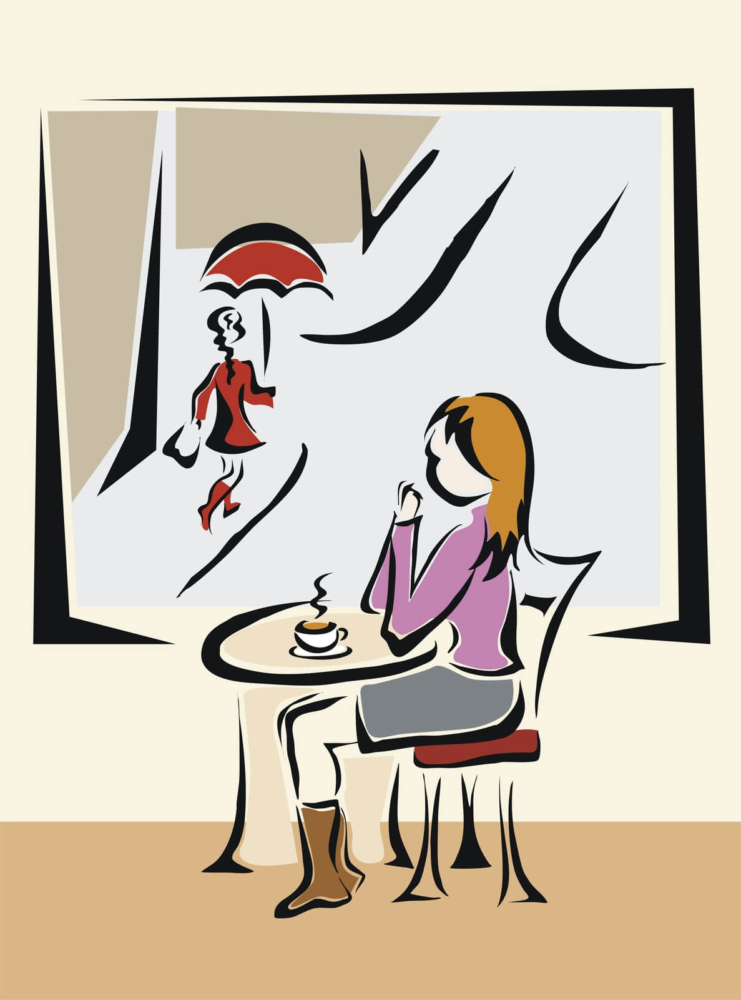

Definida en términos simples como el lugar donde uno puede disfrutar de un café y el servicio a la mesa, la cafetería es sin embargo uno de los espacios de sociabilidad más populares y abundantes en las grandes ciudades de todo el mundo. Permite la conexión de personas así como también el encuentro y el trabajo reflexivo o solitario, además de la posibilidad de elegir el lugar sólo para consumir un buen café.
La historia de la cafetería como establecimiento donde se sirve el café en diferentes formatos es bastante reciente. Su presencia tiene que ver principalmente con la explosión de las ciudades y los grandes centros masivos en el siglo XIX, luego de la Revolución Francesa. Recién en los últimos años del siglo XVIII habían empezado a abundar espacios de sociabilidad públicos como los salones, las tertulias y algunos otros que repetían el formato en ámbitos privados.
La cafetería surge como un modelo estándar de establecimiento donde las personas pueden asistir para solicitar un servicio de bebida (en la mayoría de los casos caliente) pero también para compartir una posible charla, una buena compañía o incluso la soledad y un buen libro. En cualquiera de los casos, la cafetería supone salir del mundo privado del hogar para disfrutar del espacio público y sus diferentes opciones de ocio.
Tal como lo dice su nombre, una cafetería se caracteriza principalmente por el servicio de venta de cafés y otras bebidas que acompañan el menú a los clientes. Por lo general, hablamos de locales con mesas y sillas donde uno puede sentarse aunque el modelo puede variar en cada caso. En algunos casos, las cafeterías ofrecen servicio de mozo o camarero mientras en otros casos las personas piden el producto y pueden llevarlo a la mesa directamente, ejemplo típico de las cafeterías más modernas.
A diferencia de otro tipo de locales donde se expenden alimentos o bebidas, las cafeterías suelen ser espacios bien iluminados, a veces ruidosos y con música tenue
Se pueden encontrar cafeterías tematizadas, otras que respetan estilos genéricos y otras que se especializan en algún tipo de café
La ciudad de Buenos Aires es una de las ciudades con más cafés de Latinoamérica y allí existe el concepto de bares notables, una interesante idea que busca rescatar a todos los establecimientos tradicionales de la ciudad que entran dentro de la categoría de bares y cafeterías para destacar su identidad especialmente frente a la presencia de sucursales de empresas multinacionales que siguen un modelo generalizado y que son iguales en toda partes del mundo.
Escrito por Laura Guerrero para la Edición #48 de Enciclopedia Asigna, en 02/2017.